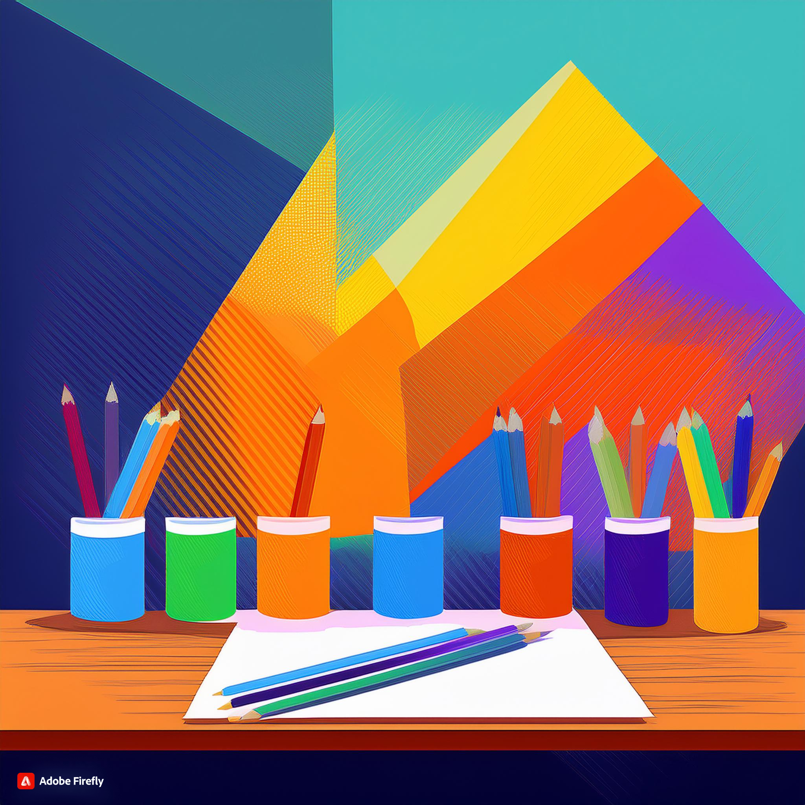

"Discover the transformative power of visual arts in early education."
Introduction
Art plays a very important role in the development of young children, by offering a unique path for self-expression, critical thinking and creativity ( Australian Government Department of Education [AGDE],2022 ). It allows the children to illustrate their thoughts through visual representation (AGDE, 2022). Engaging in artistic activities helps in the development of fine motor skills, problem-solving abilities and cognitive growth (AGDE, 2022). Furthermore, arts and crafts provide a fun and interactive way for children to explore self-expression.(Kylie.Rymanowicz, Michigan State University- January 22, 2015)
Resources, Materials, and Digital Technologies
Traditional Resources and Materials:

- Crayons, markers and colored pencils:
- Paints and brushes:
- Paper, cardboard and canvas
- Clay and playdough
- Natural materials such as leaves, stones etc.
These are the basic tools for art which is used in traditional days.
Digital Technologies:
- Tablet with art apps: Apps like Procreate,Tayasui Sketches, or ArtRage allow children to experiment with digital drawing and painting.
- Interactive whiteboards:For collaborative art projects and digital story telling.
- Digital cameras:For photography projects and documenting the creative process.
- 3D printers: For creating three-dimensional art from digital designs.
Learning Experiences by Age Group
0-2 Years:
- Finger Painting: Encourages sensory exploration and motor skills development.
- Texture Exploration:Using different materials like fabric, sandpaper, and sponges to create art.
- Simple Collage:Gluing pieces of colored paper onto a larger sheet to form a picture.
2-3 Years:
- Crayon Scribbling: Encourages control and exploration of colors.
- Clay Play: Simple shaping and molding to develop fine motor skills.
- Sticker Art: Placing stickers on paper to create pictures, enhancing hand-eye coordination.
3-5 Years:
- Storybook Illustration:Drawing pictures to accompany a story, fostering imagination and narrative skills.
- Painting with Brushes: Experimenting with different brush strokes and colors.
- Nature Collage: Using leaves, flowers, and twigs to create art, integrating natural elements.
6-8 Years:
- Mixed Media Projects: Combining various materials like paint, fabric, and found objects in a single artwork.
- Digital Art Creation: Using tablets and art apps to create digital paintings and drawings.
- Photography and Photo Editing: Taking photos and learning basic editing techniques to enhance creativity.
Pedagogical Practices and Teaching Strategies.
- Encouraging Exploration and Experimentation: Allow children to try different materials and techniques without fear of making mistakes (Arthur et al., 2020)..
- Providing Open-Ended Materials: Offer a variety of materials that can be used in multiple ways to foster creativity.
- Facilitating Discussion: Engaging children in conversations about their artwork, asking open-ended questions to encourage reflection and critical thinking.
- Integrating Art Across the Curriculum: Use art to enhance learning in other subjects, such as illustrating concepts in science or creating historical dramas.
- Providing Individual and Group Activities: Balance individual art projects with collaborative ones to develop both personal expression and teamwork skills (Arthur et al., 2020).
By integrating these resources, learning experiences, and pedagogical practices, early childhood teachers can effecively foster creativity in young children through the art curriculum, helping them to develop a wide range of skills and a lifelong appreciation for the arts. (AGDE, 2022)